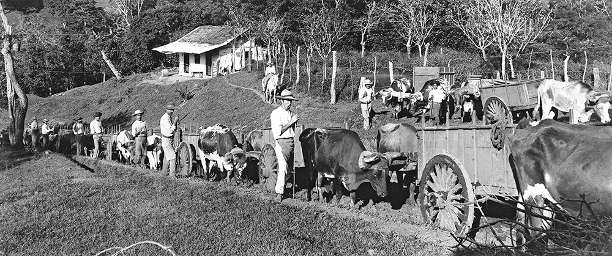
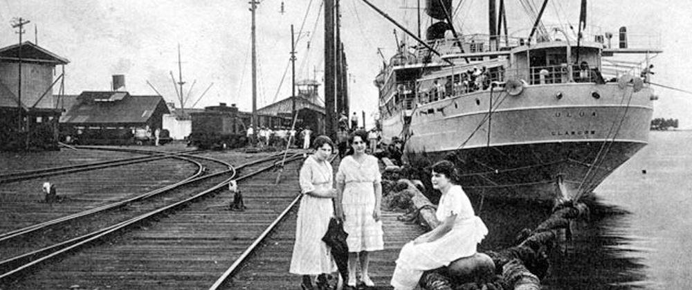

En 1720 es la fecha probable de la introducción del café a América, cuando las primeras semillas de la especie Coffea Arábica, variedad Typica llegaron a la isla Martinica, Antillas, que luego fueron sembradas en la Provincia Costa Rica a finales del siglo XVIII.
En esa época nuestro país tenía una agricultura de subsistencia. La historia costarricense cambió desde 1808: bajo la égida del gobernador Tomás de Acosta empezó a arraigarse en nuestro suelo el cultivo del café, que ha calado muy hondo en el ser y quehacer costarricense.
Costa Rica fue el primer país centroamericano que estableció esta floreciente industria. Destacadas personalidades contribuyeron con el desarrollo del cultivo y se ha asignado al Padre Félix Velarde como el primer sembrador, quien en 1816 hace referencia a que posee un solar con plantas de café. El primer cafetal estuvo 100 metros al norte de la Catedral Metropolitana, en el cruce de la Avenida Central y calle Cero.
Varios factores favorecieron el establecimiento del “Grano de Oro”. Los lugares alrededor de los cuales se hicieron las primeras plantaciones, se caracterizaban por suelos de origen volcánico, sumamente fértiles; una temporada lluviosa y otra seca, temperaturas relativamente uniformes y favorables a lo largo de todo el año para el desarrollo de la planta.
Luego de la Independencia, en 1821, los gobiernos municipales fueron los primeros en incentivar este cultivo con políticas de entrega de plantas y concesión de tierras a quienes se interesaran en esta empresa. La municipalidad josefina, pionera en ese esfuerzo, fue pronto emulada por los cuerpos administrativos de otros asentamientos: Cartago y Tres Ríos.
Los Jefes de Estado don Juan Mora Fernández y don Braulio Carrillo apoyaron la actividad cafetalera y vieron en el café el producto que generaría un movimiento económico para beneficiar nuestra economía y que permitió el desarrollo económico y social de Costa Rica. A Don Mariano Montealegre se tiene como el principal impulsador del cultivo entre 1830-1840.
Conforme crecían las primeras plantas se incrementaba el interés de los costarricenses por su cultivo. Ya en 1821 se contaba con 17 mil cafetos en producción, habiéndose efectuado la primera exportación de 2 quintales de café a Panamá en 1820. Alrededor de 1840, don Braulio Carrillo decretó que las tierras al poniente de San José, en Pavas, se dedicaran a siembras de café. El Jefe de Estado pensaba que el Gobierno debía dirigir la política cafetalera y encargarse de buscar mercados y que el más importante era el inglés. Por eso, paralelo al apoyo de la siembra ordenó construir el camino al Atlántico que le permitiría a Costa Rica tener una ruta directa hacia los puertos británicos.
¿Dónde hay cafetales en Costa Rica?
Volcanes Irazú
Volcanes Barva
Volcanes Poás

